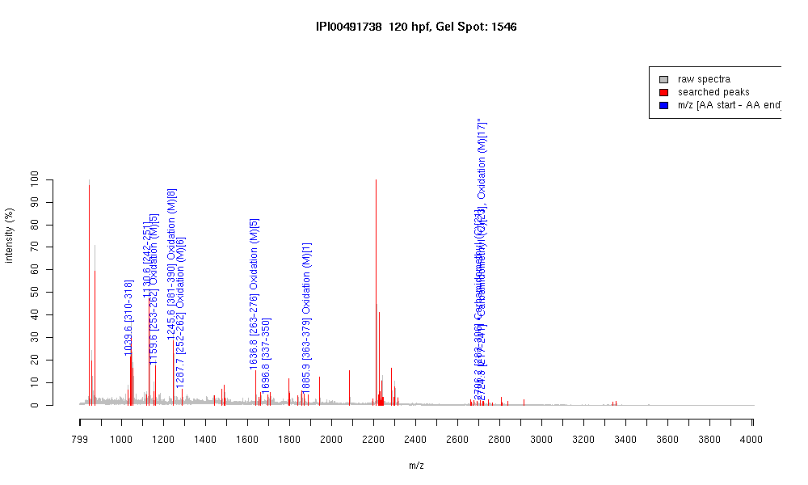

| Name | "Tubulin, beta 5" |
|---|---|
| MW | 49640.9 |
| PI | 4.77 |
| Mascot Protein Score | 72 |
| Masses (matched / unmatched) | 10 / 63 |

| Peptide | MZ (calc) | MZ (observed) | Error (DA) | Error (PPM) | Start | Stop | Modifications |
|---|---|---|---|---|---|---|---|
| YLTVAAVFR | 1039.5935 | 1039.5933 | -0.0002 | 0 | 310 | 318 | |
| FPGQLNADLR | 1130.5953 | 1130.5984 | 0.0031 | 3 | 242 | 251 | |
| LAVNMVPFPR | 1159.6292 | 1159.6268 | -0.0024 | -2 | 253 | 262 | Oxidation (M)[5] |
| ISEQFTAMFR | 1245.5933 | 1245.5936 | 0.0003 | 0 | 381 | 390 | Oxidation (M)[8] |
| KLAVNMVPFPR | 1287.7241 | 1287.7136 | -0.0105 | -8 | 252 | 262 | Oxidation (M)[6] |
| LHFFMPGFAPLTSR | 1636.8304 | 1636.834 | 0.0036 | 2 | 263 | 276 | Oxidation (M)[5] |
| NSSYFVEWIPNNVK | 1696.8329 | 1696.8433 | 0.0104 | 6 | 337 | 350 | |
| MAVTFIGNSTAIQELFK | 1885.9728 | 1885.9297 | -0.0431 | -23 | 363 | 379 | Oxidation (M)[1] |
| ALTVPELTQQVFDAKNMMAACDPR | 2706.3047 | 2706.1929 | -0.1118 | -41 | 283 | 306 | Carbamidomethyl (C)[21] |
| LTTPTYGDLNHLVSATMSGVTTCLR | 2724.333 | 2724.27 | -0.063 | -23 | 217 | 241 | "Carbamidomethyl (C)[23], Oxidation (M)[17]" |